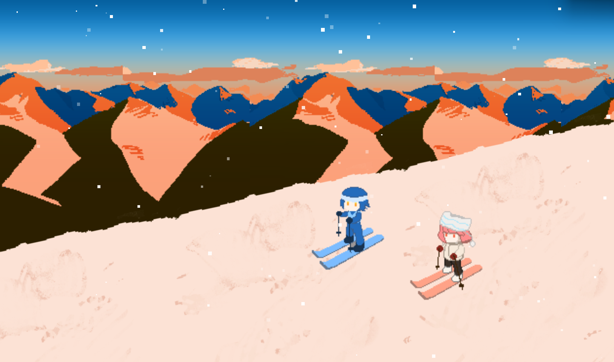

“The dialogue writing was very natural and believable.”
中文概述：这位玩家特别提到角色对白可信、人物的小声音令人喜欢，音乐、音效和视觉共同形成了完整而有打磨感的体验，并在短时间内留下持续的情绪影响。
2D PIXEL NARRATIVE GAME · GODOT
独自滑雪下山，然后去山脚的酒馆喝一杯。玩家在雪道与酒馆之间一次次往返，也在短暂相遇中慢慢认识另一个人。

玩家先独自完成一段简单的滑雪，再进入山脚酒馆喝酒、休息并与陌生人交谈。雪道提供安静和重复，酒馆承接关系与故事；两个空间不断往返，让下一次见面变得值得期待。
操作被控制在接近本能的复杂度，让注意力从“赢不赢”转向酒馆里的人是否还会出现。NPC 陪伴滑雪不增加新系统，只通过同行关系改变玩家对熟悉空间的感受。
项目获得 25 份评分，公开评论中有玩家提到自然对白、共同滑雪、环境变化、音乐与 bittersweet 的余味。这些反馈说明玩法、空间与叙事之间的连接真实发生了。
“The dialogue writing was very natural and believable.”
中文概述：这位玩家特别提到角色对白可信、人物的小声音令人喜欢，音乐、音效和视觉共同形成了完整而有打磨感的体验，并在短时间内留下持续的情绪影响。
“The story is bittersweet… memories to be cherished.”
中文概述：这位玩家被简单却有趣的滑雪段落和共同滑雪时的表情打动；故事没有让每次相遇都得到圆满，却让短暂关系成为值得珍惜的记忆。